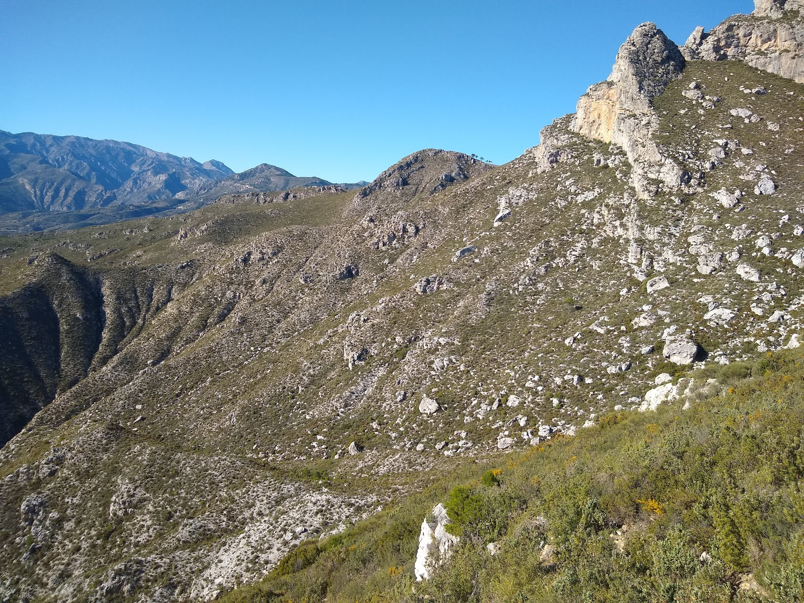

I have a PhD in Geoscience from the University of Copenhagen, completed in 2016, with a focus on using stable isotopes and trace element geochemistry to reconstruct changes in the surface conditions of Earth through time. Currently, I am a postdoctoral researcher at Princeton University working with isotopic measurements of Ca, Mg, and Sr in both modern and ancient carbonate sediments.
As an Earth Historian, I am interested in how we can use the chemistry of rocks to gain insight into the surface conditions of Earth in the past. The chemistry of marine carbonate sediments has been used to reconstruct the evolution of global biogeochemical cycles for a wide range of elements throughout the entirety of Earth history. However, one of the main limitations in using this geochemical archive is the susceptibility of carbonate sediments to diagenesis, as unlithified sediments are transformed into the rocks we can study in the geological record. Using multiple isotope systems and numerical models of diagenesis, my research seeks to extract the primary chemical information from ancient carbonate sediments by better understanding the diagenetic processes.
